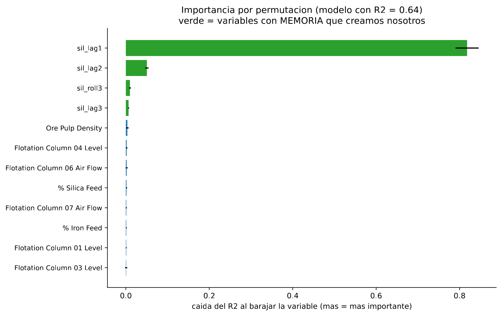
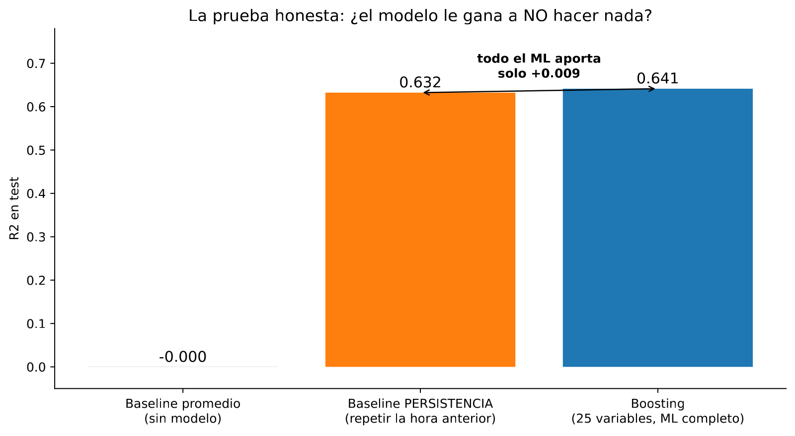
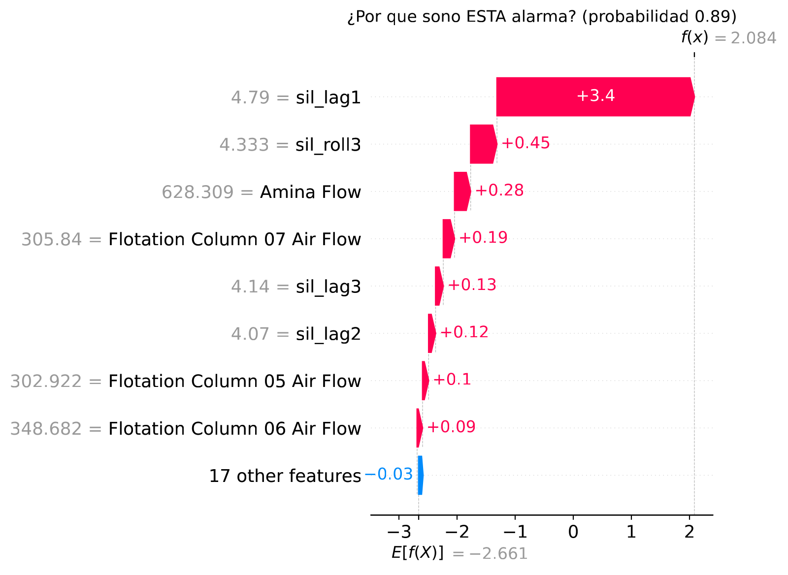
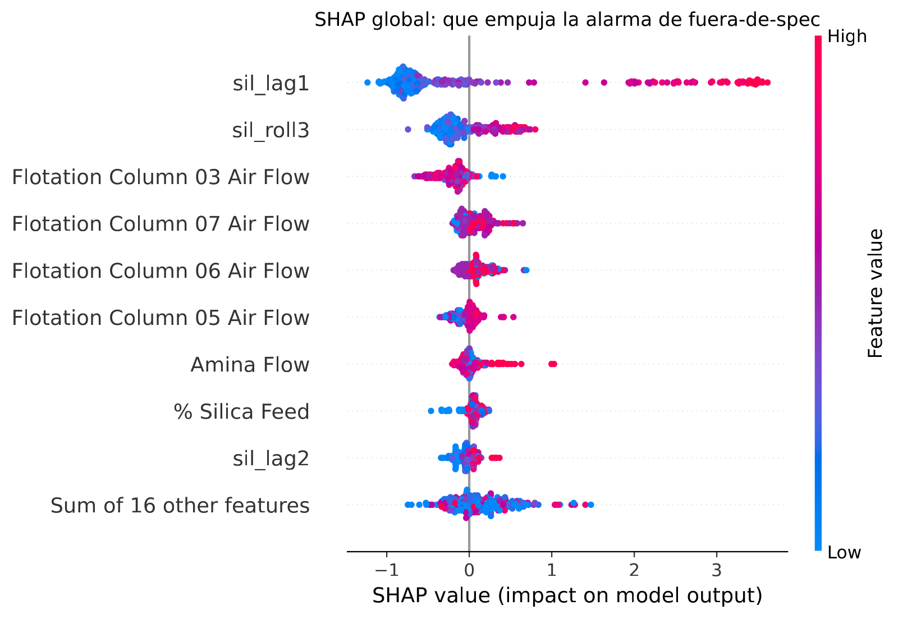

En 30 segundos
- +0,009. Eso es todo lo que el machine learning aporta sobre repetir el último análisis del laboratorio.
- La persistencia ya valía 0,632. El 0,641 del módulo 5 no era mérito del modelo, era inercia del proceso.
- La importancia por permutación lo delata. Barajar
sil_lag1hunde el R² en 0,818. La siguiente variable apenas vale 0,050. - SHAP explica al modelo, no al proceso. Enseña de dónde saca cada predicción, y aquí saca casi todo del mismo sitio.
- Esta es la lección más cara del proyecto. Elegir el rival antes de ver el resultado.
Qué resuelve este módulo
El módulo 5 dejó una pregunta abierta a propósito. Su mejor variable era la sílice de la hora anterior, y su ejemplo de juguete ya avisaba de que esa columna sola predice bastante bien.
Aquí se contesta con dos herramientas. La primera mide de qué se agarra el modelo. La segunda le pone enfrente el rival correcto.
Las dos apuntan al mismo sitio, y el resultado obliga a releer los módulos 5 y 6.
Antes de la teoría: un ejemplo de juguete
Las mismas seis horas del módulo 5, prediciendo de la 2 a la 6.
| Hora | 1 | 2 | 3 | 4 | 5 | 6 |
|---|---|---|---|---|---|---|
| % SiO₂ | 1 | 2 | 3 | 4 | 5 | 6 |
Paso 1. Cuánta variación hay que explicar
La media de las horas 2 a 6 es 4.
variación total = (2−4)² + (3−4)² + (4−4)² + (5−4)² + (6−4)²
= 4 + 1 + 0 + 1 + 4
= 10El R² se construye comparando el error de un modelo contra ese 10.
Paso 2. Un modelo que parece muy bueno
Un modelo predice 1,5 · 2,5 · 3,5 · 4,5 · 5,0.
real: 2 3 4 5 6
predicho: 1,5 2,5 3,5 4,5 5,0
fallo: −0,5 −0,5 −0,5 −0,5 −1,0
error = 0,25 + 0,25 + 0,25 + 0,25 + 1,00 = 2R² = 1 − (2 / 10) = 1 − 0,2 = 0,80R² 0,80. Un resultado que en cualquier informe se presenta como un éxito.
Paso 3. Lo que consigue una regla sin modelo
Repetir la hora anterior, como en el módulo 5.
real: 2 3 4 5 6
predicho: 1 2 3 4 5
fallo: +1 +1 +1 +1 +1
error = 1 + 1 + 1 + 1 + 1 = 5R² = 1 − (5 / 10) = 1 − 0,5 = 0,50Paso 4. Repartir el mérito
el modelo explica 0,80
la persistencia ya explicaba 0,50
----
aporte propio del modelo 0,30De ese 0,80, dos tercios ya estaban ahí gratis. El modelo aporta 0,30, no 0,80.
Paso 5. Y cómo saber de qué se agarra el modelo
Se baraja una columna al azar, se vuelve a puntuar, y se mira cuánto cayó. Si al destruir una columna el modelo se hunde, esa columna lo sostenía.
| Columna barajada | R² después | Caída |
|---|---|---|
| Ninguna | 0,80 | referencia |
| Sílice hora anterior | 0,10 | 0,70 |
| pH | 0,78 | 0,02 |
| Aire | 0,80 | 0,00 |
Una columna se lleva 0,70 y las demás no llegan a 0,02. Ese es el perfil de un modelo que se apoya en una sola cosa. Y esa cosa es gratis.
Glosario
9 términos, en palabras simples
- Baseline de persistencia. Predecir que el próximo valor será igual al último medido. Sin modelo y sin coste.
- Aporte del modelo. La diferencia entre lo que puntúa el modelo y lo que puntúa el baseline correcto. Es lo único que se le puede atribuir.
- Importancia por permutación. Barajar una columna y medir cuánto empeora el modelo. Se hace sobre datos de prueba y con el modelo ya entrenado.
- Importancia por impureza. La del módulo 2, que sale de los cortes del árbol. Se sesga hacia variables con muchos valores distintos.
- SHAP. Un método que reparte cada predicción concreta entre las variables que la empujaron. En inglés, SHapley Additive exPlanations.
- Explicación local. Por qué el modelo dijo lo que dijo en un caso concreto.
- Explicación global. De qué se agarra el modelo en general, sumando muchos casos.
- Diagrama de cascada. La figura de SHAP que enseña un caso, apilando las contribuciones.
- Diagrama de enjambre. La figura de SHAP que enseña muchos casos a la vez, una fila por variable.
Paso a paso
Paso 1. Volver a medir la importancia, mejor
La importancia del módulo 2 salía de cómo se construyó el árbol. Sirve, pero se sesga.
La importancia por permutación es más directa. Coge el modelo ya entrenado, destroza una columna barajándola, y mide cuánto empeora. Lo que mide es cuánto depende el modelo de esa columna.
Paso 2. Leer el perfil de dependencias
Si la importancia está repartida entre muchas columnas, el modelo combina información. Si una sola se lleva casi todo, el modelo es esa columna con adornos.
Paso 3. Poner enfrente el rival correcto
Tres competidores, no dos:
- predecir siempre la media, que es el rival del módulo 2,
- repetir el último análisis, que es la persistencia,
- el modelo completo.
Paso 4. Restar, no comparar
El número que importa no es el R² del modelo. Es la diferencia contra el baseline correcto.
Paso 5. Abrir una predicción concreta
La importancia global dice de qué depende el modelo en promedio. SHAP baja al caso: por qué esta alarma concreta, a esta hora concreta.
El código, por partes
Paso 1. Importancia por permutación
from sklearn.inspection import permutation_importance
resultado = permutation_importance(modelo, X_test, y_test,
n_repeats=5, random_state=0, scoring="r2")
orden = resultado.importances_mean.argsort()[::-1]
for i in orden[:4]:
print(f" {resultado.importances_mean[i]:.3f} {feats[i]}")línea por línea, 4 entradas
permutation_importance(...)- Baraja cada columna por turno y mide la caída de la métrica.
n_repeats=5- Repite el barajado cinco veces por columna, porque el azar de una sola vez engaña.
.importances_mean- La caída media de cada columna. Está en las unidades de la métrica, aquí R².
.argsort()[::-1]- Ordena de menor a mayor y luego le da la vuelta, así que quedan de mayor a menor.
R2 del modelo: 0.641
Top 6 por permutacion:
0.818 sil_lag1
0.050 sil_lag2
0.010 sil_roll3
0.006 sil_lag3
0.004 Ore Pulp Density
0.002 Flotation Column 04 Level
0,818 contra 0,050. Barajar la sílice de la hora anterior hunde al modelo más de lo que vale su propio R². Ninguna variable de proceso llega a 0,005.
El modelo no aprendió el proceso. Aprendió que el proceso cambia despacio.
Paso 2. Poner los tres competidores en la misma escala
r2_media = r2_score(y_test, [y_train.mean()] * len(y_test))
r2_persistencia = r2_score(y_test, test["sil_lag1"])
r2_modelo = r2_score(y_test, modelo.predict(X_test))
print(f"aporte del ML sobre persistencia: {r2_modelo - r2_persistencia:+.3f}")línea por línea, 2 entradas
test["sil_lag1"]- La columna del retardo usada directamente como predicción. Es la persistencia entera, sin modelo.
{...:+.3f}- El signo más fuerza que se imprima el signo, también cuando el número es positivo.
mean -0.000 | persistencia 0.632 | modelo 0.641
aporte del ML sobre persistencia: +0.009
Paso 3. Abrir una predicción con SHAP
import shap
explainer = shap.TreeExplainer(clasificador)
valores = explainer(X_test.iloc[:300])
shap.plots.waterfall(valores[264])línea por línea, 3 entradas
shap.TreeExplainer- La versión rápida de SHAP para modelos de árboles. Con otros modelos hay que usar la genérica, que es mucho más lenta.
explainer(X)- Calcula, para cada fila y cada columna, cuánto empujó esa columna la predicción.
valores[264]- Una fila concreta. La cascada explica ese caso, no el modelo entero.
shape de los valores SHAP: (300, 25)
Caso explicado: fila 264, probabilidad 0.889

En la cascada, la sílice de la hora anterior valía 4,79 y empuja la alarma +3,4. Todo lo demás junto no llega a +1,3. El enjambre confirma lo mismo en 300 casos.
El resultado, medido
Qué esperábamos. Que el modelo combinara memoria y proceso, y que el aporte sobre la persistencia fuera modesto pero claro, quizá 0,05 o 0,10.
Qué salió.
| Competidor | R² prueba |
|---|---|
| Predecir la media | −0,000 |
| Repetir el último análisis del laboratorio | 0,632 |
| Boosting con 25 variables | 0,641 |
| Aporte propio del machine learning | +0,009 |
Qué significa. El 0,641 del módulo 5 era real, y casi todo era inercia. La planta cambia despacio, así que el valor de hace una hora es una predicción excelente por sí solo.
Nueve milésimas es el precio de todo el proyecto: la limpieza, las variables construidas, el boosting y el ajuste. Nada de eso compra un modelo que valga la pena desplegar.
La lectura correcta de los módulos anteriores
No hay que tirar nada de lo anterior. Hay que releerlo con el rival correcto delante.
| Módulo | Lo que decía | Lo que dice con el baseline correcto |
|---|---|---|
| 2 | R² 0,04, techo del problema | Correcto, y contra un rival flojo |
| 4 | R² −0,13 con validación honesta | Correcto, y todavía más severo |
| 5 | R² 0,64, el mejor del proyecto | El número es real. El mérito propio es +0,009 |
| 6 | El clasificador gana al baseline | Contra la persistencia, pierde: atrapa 113 de 182 frente a 140 |
Por qué esto no es un fracaso
Un resultado negativo bien medido es un resultado. Y este está medido tres veces: por permutación, por comparación directa y por SHAP.
Lo que aquí se demuestra es que la inercia del proceso ya contiene casi toda la información predecible a una hora vista. Eso es un hallazgo sobre la planta, no sobre el modelo.
Lo que este módulo deja abierto
Queda una salida. A una hora, la persistencia es imbatible porque el proceso apenas se ha movido. A horizontes más largos esa ventaja tiene que desaparecer.
Si el machine learning aporta algo, tiene que ser ahí. El módulo 8 repite la medición a 1, 3, 6 y 12 horas, y también cambia la pregunta: predecir el cambio en vez del nivel.
Ojo
- Un R² alto no es mérito hasta que se resta el baseline. Aquí 0,641 se convierte en +0,009.
- El baseline se elige antes de ver el resultado. Si se elige después, se elige el que mejor deja al modelo.
- La importancia por impureza y la de permutación no miden lo mismo. La primera sale de cómo se construyó el árbol. La segunda, de cuánto depende el modelo ya hecho.
- La permutación se hace sobre datos de prueba. Sobre entrenamiento mide memorización.
- SHAP explica al modelo, nunca al proceso. Si el modelo aprendió una correlación invertida por el lazo de control, SHAP la explicará con toda naturalidad.
- Una sola variable con importancia dominante es una alarma. Casi siempre significa fuga, o que esa variable es el objetivo disfrazado.
Puente metalúrgico
El baseline correcto es el blanco de un ensayo. Nadie reporta la recuperación de un reactivo nuevo sin correr en paralelo una prueba sin reactivo. Si la prueba en blanco ya da el 90 % de lo que da el reactivo, el reactivo aporta el 10 % restante, no el 100 % que marca el medidor.
La persistencia es la prueba en blanco de este proyecto. Marca 0,632 sin hacer nada.
La importancia por permutación es un ensayo de sensibilidad en planta. Se perturba una variable y se mira cuánto se mueve el resultado. Si desconectar un sensor no cambia nada, ese sensor no estaba gobernando el proceso.
Y el resultado tiene una lectura de operación muy concreta. Que la ley de hace una hora prediga la de ahora significa que el circuito tiene un tiempo de residencia largo comparado con la frecuencia del laboratorio. Es información real sobre la planta, y no la da ningún modelo: la da el baseline.
Repaso
El modelo da R² 0,641 y la persistencia 0,632. ¿Cómo se resume eso en una frase?
El modelo aporta nueve milésimas sobre repetir el último análisis del laboratorio.
Ese es el número que hay que dar, no el 0,641. El R² de un modelo se mide contra predecir la media, que aquí es un rival sin ninguna información. La persistencia sí usa información que la planta ya tiene, así que es el rival honesto. Todo el trabajo de limpieza, variables construidas y boosting compra +0,009.
Barajar una columna hunde el R² en 0,818, cuando el modelo entero vale 0,641. ¿Cómo puede ser?
Porque el R² puede irse por debajo de cero, y ahí es donde cae el modelo sin esa columna.
La importancia por permutación mide la diferencia entre el R² con la columna intacta y el R² con la columna barajada. Si con ella vale 0,641 y sin ella cae a −0,177, la caída es 0,818. No hay tope en 1: la caída puede superar el R² original cuando el modelo destrozado predice peor que la media.
¿Qué explica SHAP exactamente, y qué no?
Explica al modelo. No explica al proceso.
SHAP reparte una predicción concreta entre las variables que la empujaron, y lo hace fielmente: dice de dónde salió ese número. Lo que no puede decir es si esa relación es causal. En este proyecto la amina aparece con signo invertido respecto a la química, porque el operador dosifica más cuando la sílice sube. SHAP reproducirá esa relación invertida sin inmutarse, porque es la que el modelo aprendió. Confundir una explicación de SHAP con una explicación física es el error más común al usarlo.
El proyecto llevaba cinco módulos celebrando mejoras. ¿Estaban mal?
No estaban mal, estaban mal comparadas. Las mediciones eran correctas y siguen siéndolo.
El módulo 2 midió bien su 0,04, el 4 midió bien su −0,126 y el 5 midió bien su 0,641. Lo que faltaba era el rival correcto en la misma tabla. En cuanto aparece, el 0,641 se descompone en 0,632 de inercia y 0,009 de modelo. La lección práctica es que el baseline se define al empezar el proyecto, no al terminarlo, porque elegirlo al final significa elegir el que mejor deja al trabajo hecho.
Si a una hora la persistencia gana, ¿dónde podría aportar el machine learning?
A horizontes más largos, y prediciendo el cambio en vez del nivel.
La persistencia gana a una hora porque el proceso apenas se ha movido en ese tiempo. Cuanto más lejos se mire, más se degrada esa ventaja, y ahí es donde un modelo con información de proceso podría aportar algo propio. La otra vía es cambiar la pregunta: en vez de predecir cuánta sílice habrá, predecir cuánto va a subir o bajar. La persistencia, por definición, predice cero cambio siempre. El módulo 8 mide las dos ideas.